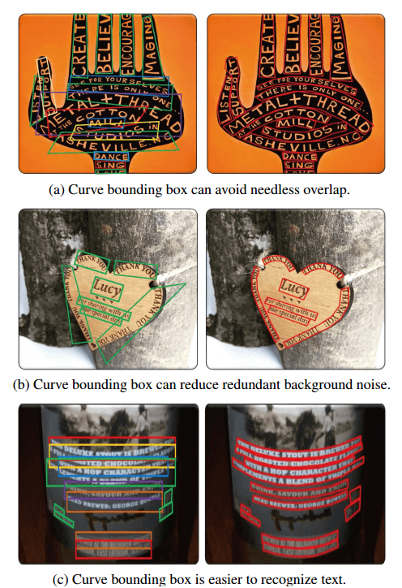
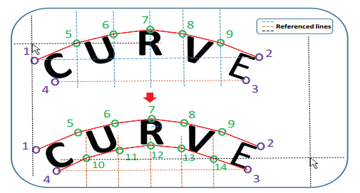
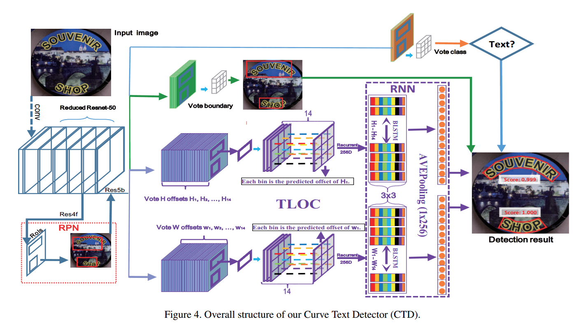
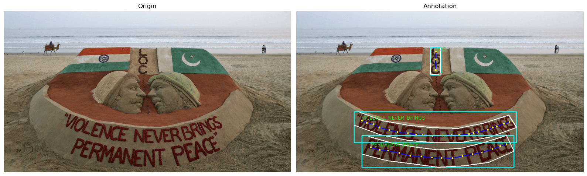
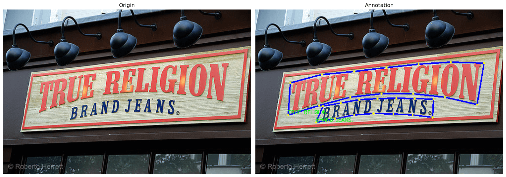

Paper-Detecting Curve Text in the Wild-New Dataset and New Solution
目录
资源
PapersWithCode：
Arxiv：[1712.02170v1] Detecting Curve Text in the Wild: New Dataset and New Solution (arxiv.org)
- GitHub（可以下载数据集）：Yuliang-Liu/Curve-Text-Detector: This repository provides train＆test code, dataset, det.&rec. annotation, evaluation script, annotation tool, and ranking. (github.com)
正文
Abstract
提出了：
一个数据集 CTW 1500（1000 张用于训练，500 张用于测试）
基于该数据集提出了一种基于多边形的曲线文本检测器（CTD）
1 Introduction

目前的数据集很少有曲线文本，用四边形标记这种文本是有缺陷的，更不用说矩形了。例如，如图1所示，使用曲线边界框有三个显著的优点：
- 避免重叠
- 减小背景噪声
- 避免使用多个文本行
对于所有类型的曲线文本区域，一个 14 点的多边形就足以定位它们。
在所提出的数据集上，结果表明，具有轻度减少的 resnet-50 的CTD可以有效地检测曲线文本。
目前的技术检测曲线文本都不好使。
3. CTW1500 Dataset and Annotation
Data decription
数据描述。CTW1500 数据集包含
- 1500 幅图像
- 10751 个边界框（3530个是曲线边界框）
- 每幅图像至少一个曲线文本。
- 多语言，主要包含中文和英文
Annotation

为了包围曲线文本，我们创建了十条等距的参考线来帮助标记额外的 10 个点（我们实际上发现额外的10 点足以标记所有类型的曲线文本）。我们使用等距线的原因是为了简化标注工作，并减少主观干扰。
一个曲线文本比标记四边形文本消耗大约三倍的时间。
4.1. Network Architecture

我们 CTD 的总体架构如图4所示，可分为三个部分：backbone、RPN 和 regression module。
- backbone 通常采用 ImageNet 预先训练的流行模型，然后使用相应的模型进行微调，如 VGG-16、ResNet 等。区域建议网络（RPN）和回归模块分别连接到主干；
- RPN 生成粗略回忆文本的建议；
- regression module 对建议进行微调，使其更加紧凑。
4.2. Recurrent Transverse and Longitudinal Offset Connection (TLOC)
4.3. Long Side Interpolation
4.4. Polygonal Post Processing
非多边形抑制（NPS）。误报检测结果是制约文本检测性能的重要原因之一。
多边形非最大值抑制（PNMS）。非极大值抑制被证明对目标检测任务非常有效。
5. Experiments
提出的模型有效。
6. Conclusions and Future Work
数据集
train_images.zip训练集图像（1000 张）ctw1500_train_labels.zip（训练集图像的标注文件，xml 格式）test_images.zip测试集图像（500 张）gt_ctw1500.zip（测试集图像的标注文件，txt 格式）
可视化训练集图像的代码：
|
|

可视化测试集图像的代码：
|
